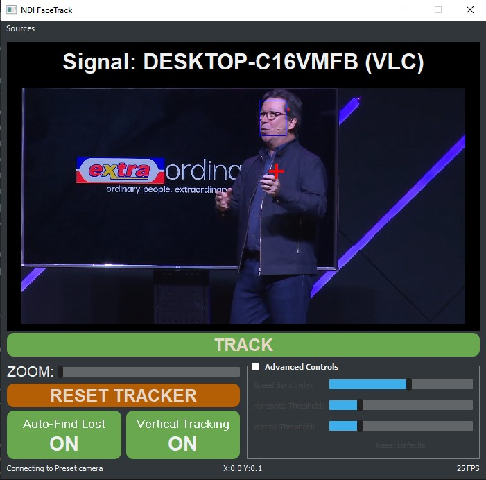

NDI_FaceTrack
A Windows desktop application allows Bird Dog PTZ Cameras to automatically track persons of interests, freeing up camera operators. This application uses Machine Learning and CV Techniques to Identify and track both faces and human body figures.
NDI Facetracking uses open multiple open source projects to work seamlessly betwween each other, namely:
-
A self-implemented state-of-the-art tracking algorithm based on the following paper: http://downloads.hindawi.com/journals/mpe/2019/9602460.pdf
-
A robust and fast facial detection method using MTCNN: https://github.com/ipazc/
-
OpenCV Object Trackers
-
Custom Tiny Yolov4
-
NDI C++ / Python Wrapper Library: https://github.com/buresu/ndi-python

https://github.com/Tomas1337/NDI_FaceTrack
An integral part of this project is to have this easily deployable to users in a robust lightweight executable file. Currently achieves +30FPS on an QuadCore Intel 2.4GHz